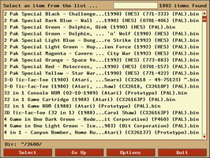
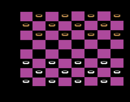
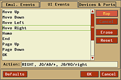

Stella
Dieser Artikel wurde für die folgenden Ubuntu-Versionen getestet:
Ubuntu 16.04 Xenial Xerus
Ubuntu 14.04 Trusty Tahr
Zum Verständnis dieses Artikels sind folgende Seiten hilfreich:
 Stella
Stella  ist ein Emulator für die Atari 2600 VCS (Video Computer System), welche in den frühen 80ern eine beliebte Spielekonsole war. Die Hardware wie Joysticks, Paddle Controller und Tastatur werden emuliert.
ist ein Emulator für die Atari 2600 VCS (Video Computer System), welche in den frühen 80ern eine beliebte Spielekonsole war. Die Hardware wie Joysticks, Paddle Controller und Tastatur werden emuliert.
|  |  |
| Hauptmenü | Checkers |
Installation¶
Stella ist in der Paketquelle vorhanden und kann über das Paket
stella
 mit apturl
mit apturl
Paketliste zum Kopieren:
sudo apt-get install stella
sudo aptitude install stella
installiert [1] werden.
Fremdpaket¶
Die jeweils aktuelle Version von Stella lässt sich als .deb-Paket als 32-Bit- und 64-Bit-Version von der Projektseite  herunterladen und einspielen [2].
herunterladen und einspielen [2].
Hinweis!
Fremdpakete können das System gefährden.
Nach erfolgreicher Installation ist das Programm unter "Anwendungen -> Spiele -> Stella" zu finden.
|  |
| Joystick einrichten |
Bedienung¶
Die Bedienung erfolgt mit der Maus und funktioniert wie in einem Dateimanager. "Select" startet das gewählte ROM - alternativ kann hier ein Doppelklick mit der  linken Maustaste auf die Datei ausgeführt werden. Über
linken Maustaste auf die Datei ausgeführt werden. Über  gelangt man zu einem weiteren Menü.
gelangt man zu einem weiteren Menü.
Das Programm kann komplett über das Terminal [3] gesteuert werden - ein einfacher Aufruf des ROMs BEISPIELROM.bin:
stella BEISPIELROM.bin
Im User's Guide werden alle möglichen Parameter erläutert.
Einstellungen¶
Über "Options" gelangt man zum Einstellungsmenü:
| Stella | |
| Menüpunkt | Beschreibung |
| "Video Settings" | Renderer (z.B. OpenGL), Vollbild, Zoom ... festlegen |
| "Audio Settings" | Lautstärke regeln / Sound deaktivieren |
| "Input Settings" | Eingabegerät konfigurieren und Tastenkürzel ändern |
| "VI Settings" | GUI von Stella anpassen. |
| "Config Files" | Speicherpfade der Konfigurationsdateien und ROMs ändern. |
| "Game Properties" | Einstellungen zum ausgewählten Spiel ändern |
Tastenkürzel¶
| Stella | |
| Taste(n) | Funktion |
| F12 | Bildschirmfoto aufnehmen |
| Strg + Q | Emulator beenden |
| Esc | Spiel beenden |
| Tab ⇆ | Optionen aufrufen |
| Alt + ⇧ + 0 / Alt + - | Fenstergröße ändern |
| Alt + ⏎ | Vollbild / Fenstermodus |
| Alt + / Alt + ⇧ + 9 | Lautstärke anpassen |

- Erstellt mit Inyoka
-
 2004 – 2017 ubuntuusers.de • Einige Rechte vorbehalten
2004 – 2017 ubuntuusers.de • Einige Rechte vorbehalten
Lizenz • Kontakt • Datenschutz • Impressum • Serverstatus -
Serverhousing gespendet von